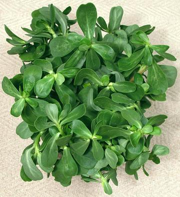

Purslane

[Verdolaga (Mexico), Pigweed, Little Hogweed, Pusley; Sanhti, Punarva,
Kulfa (India); Ma Chi Xian (China); Portulaca oleracea of
family Portulacaceae]
This low growing succulent is native from North Africa through the
Indian Subcontinent and on to Australasia. It is a common invasive weed
in North America, particularly California vineyards, but there is some
evidence it was brought to Canada in pre-Columbian times. By the 20th
century it had fallen out of favor north of the Mexican border, but due
to shifting demographics, is now common in many specialty markets in
Southern California and elsewhere.
Stems, leaves and flower buds are edible and often used fresh in
salads. Purslane is also used in stir fries and cooked like spinach. It
is somewhat mucilaginous which works well in soups and stews. Purslane
is highly nutritious with a good selection of vitamins, minerals and
powerful antioxidants, and is higher in Omega-3 fatty acids than any
other land plant.
More on Carnations.
Purslane is often used raw in salads and is considered to have a
special affinity for cucumbers. It is also used in soups, stews and stir
fries. It is particularly popular in Greece and Turkey, where it has
been used since prehistoric times, but is also used throughout its range,
from Morocco to Australia. It was taken from Spain to the New World and
is now popular in Mexico and Central America.
Buying:
Purslane will be found in markets serving
Mexican, Greek, Turkish or Middle Eastern communities. The fleshy stems
are red tapering to green at the tips. It can be picked wild in many
places, particularly in California vineyards, and is easily grown in
pots and planters. It tolerates poor and compacted soil as well as
erratic watering, but it is an annual so some parts have to be allowed
to go to seed for the next season.
Storing:
Durability of this plant varies widely,
probably depending on how it's been handled on its way to the market.
I've had bunches start losing leaves by time I got them to the checkout
counter, and a few bunches that survived just fine for 5 or 6 days.
For safety, figure on using it in a day or so. If in reasonable shape
it can be refreshed by cutting the stem ends and standing in a cup of
cool water for an hour or so.
Cooking:
For stir fries and the like cook similarly to
spinach. in just a little oil. Free water on the leaves from washing is
sufficient to get it cooking. Stir frequently and stop cooking as soon as
the leaves are limp and of a uniform cooked color. Do not overcook or it
will become slimy.
In soups, stews and curries its mucilaginous nature is valued as a
thickener, similar to the way okra is used, so it's cooked much longer
by those methods to bring out this property.
Nutrition:
Purslane is higher in Omega-3 fatty acids
(particularly alpha-linolenic acid) than any other land plant. it is also
high in vitamins A and C, and has some vitamin B and cartenoids, as well
as minerals magnesium, calcium, potassium and iron. It contains
significant amounts of two powerful betalain antioxidants which have
shown anti-cancer activity. Purslane had been used as a medicinal since
ancient times, mainly for Liver, urinary and inflammation complaints.
cn_purslz 090710 - www.clovegarden.com
©Andrew Grygus - agryg@clovegarden.com - Photos on this
page not otherwise credited are © cg1 -
Linking to and non-commercial use of this page permitted